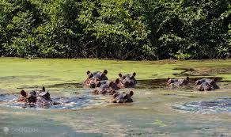
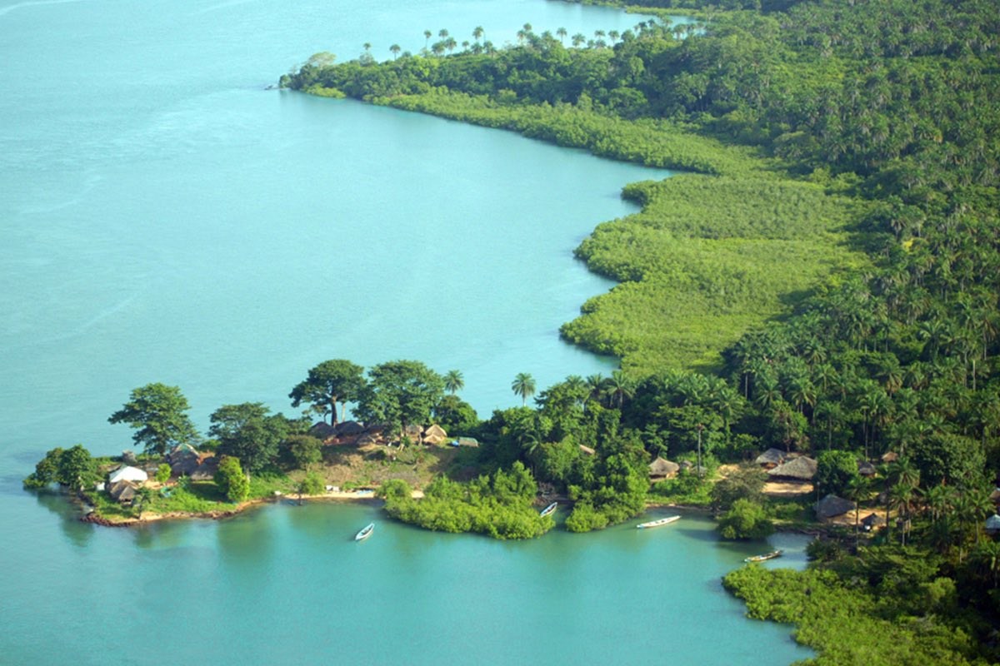

ilha de Orango

ilha de Rubane

ilha de Canhabaque(ROXA)
O Arquipélago dos Bijagós é um dos maiores tesouros naturais da Guiné-Bissau.
Localizado no Oceano Atlântico, é composto por cerca de 88 ilhas e ilhotas,
muitas delas ainda pouco exploradas e com natureza preservada.
As ilhas são conhecidas pelas suas praias paradisíacas, mangais, fauna diversa e pela forte ligação entre o povo Bijagó e o meio ambiente. A região é considerada Patrimônio da Biosfera pela UNESCO.
ilha de Orango
ilha de Rubane
ilha de Canhabaque(ROXA)
O turismo nas ilhas Bijagós é voltado principalmente para o ecoturismo, oferecendo atividades como observação da natureza, passeios de barco e contato com comunidades locais.